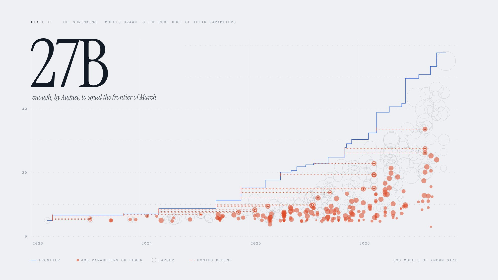

Articles
Data essays on the AI frontier, built on the Artificial Analysis Intelligence Index. By Nabeel.

The Frontier ChaseThe US–China gap is down to 2.5 points, and open weights now trail closed models by about three months.

The Shrinking FrontierHow a 27-billion-parameter model now matches what the frontier scored in March.